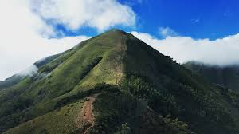

IDUKKI
Idukki (ഇടുക്കി) is a district in the Indian state of Kerala.[2] It was constituted on 26 January 1972, by splitting the district of Kottayam into two parts. Its division was earlier headquartered at Kottayam city, but moved to Painavu in June 1976. Idukki district lies amid the Western Ghats of Kerala.Though it is regarded as the second-largest district in the region, it has the lowest population density among the other districts of Kerala,the urban population being higher than the rural. Idukki is rich in forests and also known as the "Spice Garden of Kerala".
POPULATION
11.1 lakhs (2011)
AREA
4,358 km2
TOURIST SPOTS
MEESAPULIMALA
The second highest peak in South India, Meesapulimala is an ideal spot for trekking. The starting point of the trek is either Rhodovalley or Silent Valley which lies 6 km before Rhodovalley. After trekking for about 8 km from Rhodovalley, one gets to witness the grasslands, wildlife, rainforests, and small waterfalls.
RAMAKKALMEDU

An exquisite hill station situated in the Idukki District on the Kerala-Tamil Nadu state border and home to a number of attractions Ramakkalmedu is a must-visit attraction. Its name can be broken down into three words namely Ram, Kal, and Medu referring to Lord Rama, rock, and land. According to legend, this place was visited by Lord Rama while he was searching for his wife Sita who was kidnapped by Ravana, the king of Lanka. While his search was going on, he stepped on the tallest rock while looking for Sita which was named as Ramakkal and later came to be known as Ramakkalmedu.
VAGAMON

1100 meters above sea, far way from the loud city culture, lush greenery and serenity to gift every visitor, Vagamon could be your quiet offbeat hill station in Kerala away from maddening tourist crowds. If you are a forest lover, the first place you should visit in Vagamon is the Vagamon Pine forest, which is the major tourist attraction of this place. A very popular spot for movie shootings, Vagamon forest is actually a man-made forest which was created during the British era. The forest overlooks the entire Vagamon valley and is a beautiful place where you can go for a long walk, or just sit under a pine tree and breathe in the fresh mountain air.